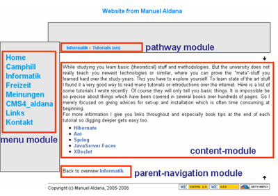

Your template file is simply a html document where you set the layout. Inside your template (remember the sushi layout) you are doing two things:
- Setting layout of your site (static)
- Calling site modules (dynamic)
Layout (static)
In the layout you define which colors, fonts and rectangles to use. Besides you decide where to put the site-modules. Because the layout is defined for all your pages (the menu is for instance always blue and is placed always on the left hand side) it is a static output.
There are two ways to layout your site: with html tables or with CSS layouting. I definetely prefer CSS layouting. If you don’t know it just read the good css layout tutorial. This tutorial explains CSS-layouting with Dreamweaver but just grasp the concepts and you will do your way without using Dreamweaver. Apart from layouting you anyway should put presentation information (blue big font, borders etc.) into a CSS file and include it inside your template.
Calling site modules (dynamic)
The calling of your site modules is the dynamic part of your template. The site modules get called and generated dynamically the html content which gets replaced at the place where the modules got called. The output depends on the URL you currently chose. And because these site modules get called at one place (your template) with calling site modules you are defining dynamic information.
To learn how to include site modules in your template download CMS4_aldana which comes with a homepage sample.
Example
Here an example, how the site modules could be placed in the template layout.
